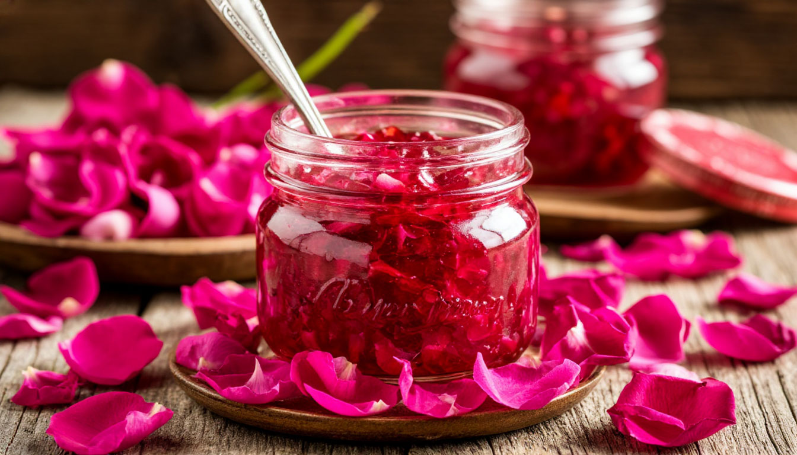

Рецепт варенья из лепестков роз известен в народной медицине с давних времен. Его готовят из самых свежих и ароматных розовых лепестков, сохраняя все ценные компоненты.
Изначально рецепт был известен на Востоке и использовался для поднятия настроения и укрепления организма. Теперь, благодаря компании "Сады Востока", этот уникальный десерт стал доступен каждому.
